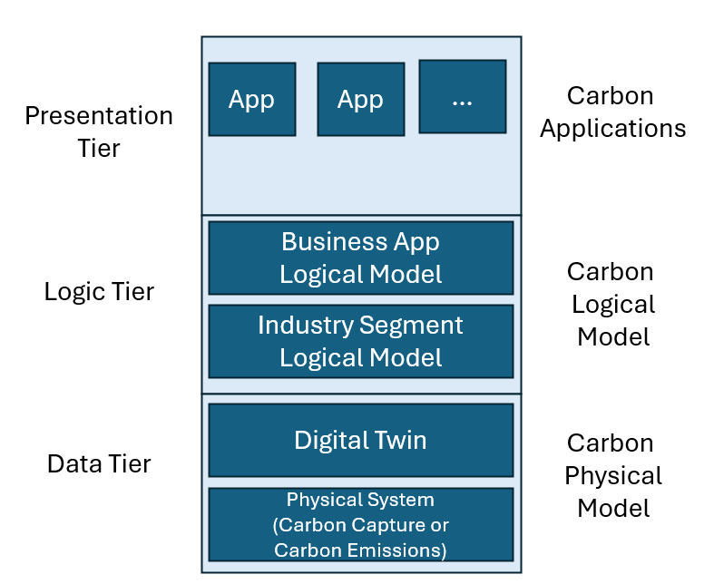

A Vision for Global Carbon Accounting
Introduction
SCOOP stands for Scalable or Sectoral Carbon Offset Open Platform, an IT platform initially targeted at the financialization of carbon offsets. SCOOP contains provisions for addressing GHG emission accounting issues considered intractable today, including the internalization of scope 3 emissions, the mapping of the attainment of net zero goals of individual entities or organizations to global goals at the state, country and eventually toward UNFCCC goals, and dynamic modeling that accurately reflects carbon accounting over time. It also features a modular architecture that enables updating the architecture to reflect evolving assumptions and knowledge.
Regarding financialization, a drag factor hampering the growth of carbon offsets is the one-of-a-kind nature for each offering. At issue is not only that the offering is unique, but also the methodology and architecture for the offering are also unique, depending on local conditions and governance. The one-of-a-kind nature for each offering makes it difficult to integrate tranches of carbon offset offerings into meaningful portfolios and the assembly of pooled investment securities that drive much of the securities trading today. While this consideration is valid for both compliance and voluntary carbon markets, it is especially acute in voluntary markets. Compliance markets are organized into large trading blocks, minimizing the impact of this issue somewhat. Still, markets where carbon is traded as a commodity do not exist today. Companies wishing to purchase offsets must transact with individual providers. Furthermore, secondary markets for carbon enabling the discharge resale of carbon liabilities similar to reinsurance or debt markets are essential to attain liquidity. These instruments do not exist today, rendering carbon markets illiquid: transactions for carbon liabilities are one-of-a-kind items negotiated with a single vendor, leaving the buyer with the burden of proving whether the liability has been retired.
A global carbon accounting capability would also enable governance at any scale, from local communities to global supply chains. One possible application is providing hard and real-time carbon accounting for the EV industry, and perhaps solve the controversy of the emissions of EVs vs. ICE vehicles. SCOOP would provide the means to quantify the emissions of a fleet of vehicles, by company or country throughout the entire life cycle of the vehicles and their supply chains, including direct and indirect emissions during operation, transportation from manufacturing to dealers and from dealers to consumers, during manufacturing and emissions in the extraction and refining of minerals, not only from the lithium in the batteries, but also in the manufacture of plastics and metals that go into the vehicle.
The platform is derived from initial work on carbon offsets, hence its name. This work suggests the need for a flexible architecture to keep pace with the understanding of GHG dynamics. A GHG mitigation strategy solely focused on offsetting faces three fundamental issues, namely,
-
Credibility crisis. Carbon offsets are undergoing a credibility crisis, primarily due to lack of transparency in offset supply chains. This is not the first time and probably not the last. BloombergNEF is relatively optimistic on this trend. This may not hold for the reasons below.
-
GHG scope escapes. Perhaps the lack of transparency is solvable, and indeed, this was one of the initial goals for the platform. The current crisis in the carbon offsets markets points issues not only related to lack of transparency but also at more fundamental issues related to the accounting of the GHG Protocol scope 1, 2 and 3 emissions for an entity (company or organization).
Scope 1 emissions, as applied to an entity represent direct emissions from operations, scope 2 are emissions from electricity and steam purchases, and scope 3 are emissions upstream and downstream the supply chains. Today entities are not accountable for scope 3 emissions, and yet scope 3 can be as high as 80 or 90 percent of the entity's supply chain and hence carbon offsets are poor indicators and predictors for the attainment of net zero on a global basis. Accountability for scope 3 emissions is challenging because entities do not have visibility or control over these emissions. Issue #2 suggests an even more fundamental issue #3.
-
Net Zero GHG accounting is incomplete with respect to addition and additionality. Offsetting was meant to transition world economies toward a global net zero. In practical terms, in an optimistic scenario, as more and more entities attain net zero, a portion of scope 3 emissions from one entity get internalized as scope 1 or 2 by another entity. For instance, the emissions from hydrocarbons sold by a refinery are scope 3 for that refinery. If these hydrocarbons are burned as fuel by another entity, the emissions become scope 1 for the purchaser. However, transporting these hydrocarbons generates more emissions, and there are additional emissions from building the transportation infrastructure. Furthermore, if the burning is conducted by an unregulated entity, these emissions will not be accounted for. Hence even if every entity claims to have reached net zero, collectively they haven't. Without explicit measures to integrate net zero progress for participating entities, it is nearly impossible to get closure on scope 3 emissions where a portion remains orphaned and unclaimed. Since emissions are liabilities, actors have an economic incentive to ignore them unless they are bound by specific obligations. Additionality claims for most offsets are incomplete because the measures to claim an offset represent true removals are also incomplete.
This dynamic was noted by Alicia Seiger, of Stanford University [^1]. From this reasoning, it follows that even if every organization in the world reaches net zero does not guarantee that global net zero has been achieved, suggesting some fundamental flaws with the concept of carbon offsets.
[^1]: T. Heller, A. Seiger, Settling Climate Accounts: Navigating the Road to Net Zero, ISBN 978-3030836498, Palgrave Macmillan (October 21, 2021)
If we acknowledge that the concept of carbon offsets will be in flux for the foreseeable future, it does not mean that the development work around carbon the original platform definition needs to be discarded, or that a start from scratch will be necessary at some point to factor in the evolution of carbon accounting concepts. What is required is a resilient architecture, so it effortlessly evolves with new requirements, discoveries, and policies over time without costly reengineering, using well-known software engineering principles.
Kumar Venkat has proposed that one possible method to tighten up carbon accounting is to carry out carbon accounting at the industry sector level. The promise of this approach is to provide the means to internalize at least some of the emissions currently treated as scope 3, generally treated as not accountable emissions. A SCOOP application would provide the formal means to adjust current claims, not as a single snapshot, but as a timeline from the past, present and future using estimations from digital twins and predictive models.
A Generalized Carbon Accounting Platform
Because of the broad range of applications, SCOOP cannot be a single architecture. Rather, it is template or framework functioning as an architecture generator. Each architecture instance is optimized for a specific industry sector. Each sector-specific architecture is an instance of SCOOP that in turn becomes a tool to generate solution instances for that sector.
The first implementations will be generated or compiled manually, but as methodologies mature, opportunities open to apply automation, with the help of AI engines to assemble and maintain solution instances, taking into account commonality within an industry sector.
There are at least five objectives SCOOP must meet along at least five categories to be useful and effective, summarized in Table 1. These goals must eventually become defining features for the platform. Starting from the top, SCOOP must be expressive, its instances able to represent a broad range of carbon accounting-related applications to fit any relevant industry segment, not just a single application stack. The stacks provide apps with interfaces able to support applications not yet created. For instance, carbon offset accounting is an important instance of carbon accounting as practiced today. The industry acknowledges that carbon offsets come with significant flaws in terms of transparency, trust, and attestation, to the point that the concept is expected to evolve and perhaps get replaced eventually. As an evolution of the original concept, the replacement will still contain elements of the original offset model. It is important that the corresponding carbon accounting platform be able to accommodate this evolution gracefully, without starting from scratch.
Likewise, a SCOOP solution supports multiple interfaces, both human interfaces and APIs for integration into other applications in a modular application network. APIs can also be used to integrate SCOOP peers into larger entities and to execute settlements for scope 1, 2 and 3 emissions.
Table 1. SCOOP Objectives
| Requirements | Remarks |
|---|---|
| Applications | Carbon Accounting for both Capture and Emissions |
| Carbon Offset Accounting | |
| Scope 1, 2 and 3 Emissions Monitoring | |
| Scalability | Integration Paths for |
| · Single-application Instances to Whole Industry Segments | |
| · Single Users to Local and Global Communities | |
| · Single Companies or Organizations to Industry Sectors to UNFCC Nationally Determined Contributions (NDCs) | |
| Capabilities | Open-ended Multi-application Environments |
| Continuous, Real-time Auditable, Traceable Carbon Assets | |
| Integration Hooks for Regulatory Standards and Agencies | |
| Extensible Framework to other GHGs beyond CO2 | |
| Internalization of scope 3 emissions through a sectoral approach | |
| Software Architecture | Enterprise 3-tier Architecture Patterns |
| Cloud-based Service Ecosystem with 100s or 1,000s of Participants | |
| Networks of Collaborating Independent Service Providers | |
| Open-Source Project (starting git/mkdocs repository) | |
| Foundation Technologies | Digital Twins; Internet of Things; NoSQL; LoRa; GIS; Blockchain Secure Ledgers; Artificial Intelligence; Financial, Cybersecurity, Privacy and Regulatory Standards |
A SCOOP scoreboarding system can keep track of both carbon capture and emissions within a supply chain or lifecycle, as well as the different flavors of GHG mitigation such as emissions avoidance vs. removals, risk assessments for carbon tranches, and permanency assessments based on storage modalities. As a possible application, the FinTech industry can use this carbon accounting capability to issue carbon securities thereby integrating carbon accounting into financial trading systems.
A SCOOP model incorporates capabilities to explicitly identify and quantify scope 3 targets that can be internalized into scope 1 or 2 from interactions within the entities in an industry segment. These interactions take place when a new entity is incorporated integrated into an existing sectoral model as well as during operations.
A SCOOP system must be scalable over every metric relevant to an application. The human interface must support access by individuals or other applications, from cohorts varying in size from a few people to millions.
With respect to scalability, calls to APIs must satisfy latency and throughput performance as required by an application. Solutions for a particular industry can be replicated to represent individual participants within the industry, and orchestrated action across all instances within an industry should be possible. Doing so would make it possible to calculate country-wide net zero assessments across an entire industry segment.
SCOOP brings up capabilities to address issues that hound current GHG mitigation approaches. The platform must be infinitely malleable to support a broad range of present and future applications. As such, it represents a high-level, instantiable architecture, that is an architecture template for an architecture for a specific application to implement carbon accounting for a target industry segment. The selected architecture is used in turn to guide the specification of solution instances within the segment. The solution-building process requires risk assessments that prioritize the reuse of existing processes or technologies over processes that assume capability breakthroughs.
The models must accommodate time-varying changes in the underlying physical systems. Take forestry-based offsetting applications for instance, where permanency is an issue because the underlying assets are inherently impermanent living entities. In a forest managed as a carbon capture repository, the carbon stored in the forest's biomass and in the soil is a growing asset because trees grow, but it can also shrink due to tree harvesting, forest fires, disease, mismanagement or due to climate change itself. Yet, most modeling for forest-based systems treat change as an anomaly when change is a basic characteristic of the underlying forest assets.
When offset purchasers discover post facto that these estimates no longer hold even if they were accurate initially, a crisis of confidence ensues. The issue can be addressed with continuous modeling that closely tracks stored carbon over time. Estimates of future quantities are possible through predictive modeling. Under these circumstances, the usual financial practices to manage time-varying assets are well-known and can be applied here. Managing a portfolio of carbon offset may not be that different from managing a basket of commodities. The underlying models must be auditable with capabilities for introspection with provisions for monitoring by regulatory agencies. These capabilities are essential to build trust. Without this trust market participants must assume the worst and discount the value of the assets accordingly.
SCOOP models also explicitly track the internalization of scope 3 emissions as more entities or organizations are integrated within an industry segment carbon accounting, either voluntarily or through compliance requirements under a dynamic similar to the way carbon markets operate today.
The SCOOP sectoral approach lights a path for this internalization to happen. The process can be visualized through a thought experiment: if two organizations decide to do carbon accounting jointly under the SCOOP framework, a portion of scope 3 emissions get internalized into scope 1 or 2 for one of the partners. SCOOP documents how this process takes place as part of carbon lifecycle monitoring, including the carbon quantities involved.
Following this train of thought, and more organizations join this SCOOP partnership, it becomes a consortium, and with each new member triggers additional scope 3 internalization. If membership becomes de facto for 2 or 3 sectors, the mutual scope 3 emissions across the members get internalized. The goal here is coalescing emissions to ever larger jurisdictions, up to and possibly more whole countries. Integration at the country level would enable very precise and credible NDC accounting. The technical, business and political work that this integration process entails would still be daunting, but SCOOP offers a path to scope 3 accounting that does not exist today by other means.
The data and insight from scope 3 accounting through this integration process is actionable. It offers courses of action to optimize GHG mitigation outcomes, as well as qualified data to prove to regulatory agencies that these outcomes are quantitatively creditable. An example of this cross-interaction is in district energy systems, where the waste heat from a nuclear power plant is used to heat or cool a nearby community.
There are multiple benefits derived from this scheme. The most obvious is a reduction in energy use by the community from electricity or burning fossil fuels for heating or cooling buildings. The power plant gets relief from environmental issues due to adverse heating when the heat is transferred to a body of water, or water consumption from cooling towers. These schemes are in use today. SCOOP offers a mechanism to quantify the GHG emissions, positive or negative, from these exchanges to ensure there are accurate financial pricing signals or environmental compliance assessments.
A similar dynamic is possible with the waste heat from data center operations. The focus to date for sustainability in data centers has been on energy efficiency and offsetting through the purchase of clean energy. This is not surprising from a sectoral perspective, as most sustainability initiatives start with what a given organization can do internally. A sectoral collaboration opens a new vector for GHG emissions mitigation.
SCOOP is also open-ended with respect to applications. A valuable trait of a solution initially targeting CO2 as a GHG is being retargetable to accommodate the effect of other GHGs such as CH4 and NOx at minimal cost, perhaps by changing parameters in the physical or chemical model. For instance, the global warming effect of CH4 is initially much larger than that of CO2, while the effect of CO2 is permanent within a humanity historical time scale, CH4 decays much faster, a behavior easily handled with the time-varying models under SCOOP.
An essential architectural trait of SCOOP is that to the extent possible, it does not assume technical or technological breakthroughs. Its value proposition derives from the integration of already existing components. The SCOOP software architecture reflects this principle. The methodologies in use to develop cloud applications today can be reused to build SCOOP instances. A SCOOP instance roughly follows the well-known three-tier software architecture pattern ^SoftArchWiki. This pattern has been applied liberally, and SCOOP is no different. Let's use the Wikipedia version as reference:
{kind=link}
Conventionally, the presentation tier implements the user interface. However, the consumer for this interface may be another application, in which case this interface gets pushed down to the logic tier. Similarly, the logic tier may consist of at least two layers, the layer below implementing SCOOP's technical architecture and a business architecture layer next up. The data tier, traditionally the bottom layer becomes a supporting service to the technical architecture layer and hence gets pushed up. The mapping from the traditional 3-tier architecture to SCOOP looks like the figure below:

The annotations on the left represent the traditional 3-tier nomenclature, and the ones on the right represent the SCOOP layering. The bottom tier represents the physical model for the industry domain, vertical or segment being represented. The model applies both to the target carbon removal, capture or avoidance entity as well as emissions. It consists of at least two layers: The target physical entity is at the bottom. The physical entity is not directly usable; it needs to be digitized through an array of sensors and effectors as well as algorithms for signal conditioning and error correction. This capability is embodied as a digital twin sitting on top.
The logic tier integrates the physical models for participating entities into a sector-specific logical model. The business application model integrates data from the industry segment technical model into a form appropriate to support business applications.
Foundation Technologies
A goal for SCOOP is to generalize the original COOP architecture to encompass an industry sector without significant rework as more entities are incorporated into the sectoral model. Let's call this new scheme scaled COOP, or simply SCOOP. COOP models a single supply chain, from digital twin to financial market offerings. SCOOP becomes an IT carbon accounting platform, much larger in scope, with dozens, possibly hundreds of digital twin models representing a cross section of the target industry, with potentially multiple applications. COOP is still there, as a particular case. The SCOOP architecture represents a trivial modification to the original COOP architecture. Let's start with the original COOP architecture, shown in Figure 1.
Finally, SCOOP needs the support from an array of foundation technologies at all levels. Supporting the physical tier requires technology to implement digital twins, deploy IOT-based digital sensors in the field, and various signal processing algorithms. The industry segment logic and business app logic require data bases and data centers to function. In the presentation tier, if the target application is carbon trading, then fintech becomes an essential component.